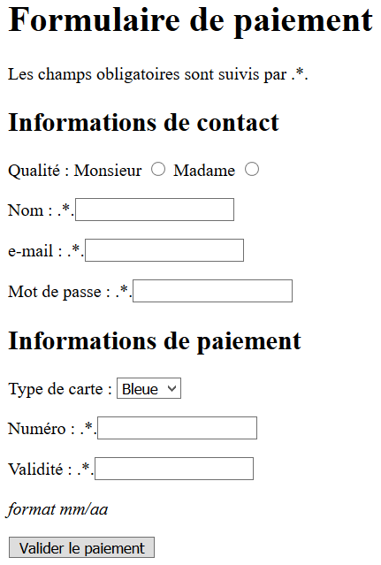

Remarques préalables :
Un formulaire web consiste à offrir la possibilité à un utilisateur de répondre à une ou plusieurs question(s), sous diverses formes (choix multiples, champ de texte,...).
Un formulaire HTML est indiqué par la balise <form> et contient notamment
des champs de saisie limités par des balises <input>.
Les attributs value seront des variables utilisées par JavaScript ou Brython.
On constate que l'attribut type, de la balise <input> permet
de varier le type de formulaire à notre disposition (boutons, champ de saisie,...).
Il existe d'autres type : tel, search, url, email, number, range, color ou list.
Si vous voulez découvrir ces autres types, vous pouvez par exemple consulter ce site web.
name : dans l'exemple de boutons radio précédent, on a précisé name="categorie".required dans la balise <input>.checked.<div> (qui signifie division du document) est un conteneur
générique qui permet d'organiser le contenu sans représenter rien de particulier.
Il peut être utilisé afin de grouper d'autres éléments pour leur appliquer un style
(en utilisant les attributs class ou id) ou parce qu'ils
partagent des attributs aux valeurs communes. Il doit uniquement être utilisé lorsqu'aucun
autre élément sémantique (par exemple <article> ou
<nav>) n'est approprié.
<input> de type bouton,
il existe une balise spécifique qui permet de faire la même chose : <button>.
Le code suivant peut donc remplacer le code utilisé précédemment pour créer un bouton. On constate,
ci-après que le rendu est identique avec ces deux codes différents :
Un autre élément important interaction est la liste déroulante générée par la balise
<select>.
La balise <select> autorise un seul choix par défaut, mais il peut être précisé
multiple dans la balise pour permettre de valider plusieurs choix simultanés.
Dans ce cas les valeurs séléctionnées sont traitées comme un tableau.
Ce dernier formulaire avec sélecteur n'est pas élégant, mais il permet de sélectionner
plusieurs choix en cliquant tout en laissant appuyée la touche "Ctrl".
De plus, il est possible de sélectionner par défaut un (ou plusieurs éléments) en ajoutant
l'attribut selected à la balise <option>. Voir ci-dessous.
Réaliser le visuel du formulaire suivant :
Pour cela :
<input> et <select>.type lors de l'utilisation d'une balise <input>.name dans chacun des cas (l'attribut name
sera utilisé plus tard pour retrouver la valeur d'un élément d'un formulaire).Remarque : à ce stade, sans Javascript ou Brython, il est normal que votre bouton "Valider le paiement" soit sans effet.
Dans ce chapitre, l'idée est de rendre la page interactive, en traitant les réponses d'un formulaire. Ce traitement se fera localement, par le navigateur web, grace au langage Javascript (un résultat équivalent peut être obtenu avec Brython).
Cet exemple est le suivant :
Observer le code source de ce formulaire, en particulier
les attributs de la balise select.
Remarques :
<span> est un conteneur générique en ligne (inline)
pour les contenus phrasés. Il ne représente rien de particulier.
Il doit uniquement être utilisé lorsqu'aucun autre élément sémantique n'est approprié.
<span> est très proche de l'élément <div>,
mais l'élément <div> est un élément de bloc (avec retour à la ligne),
alors que <span> est un élément en ligne.onchange a pour valeur le nom d'une fonction :
selected(). Cette fonction est une fonction Javascript qu'il reste
à écrire.Quelques instructions Javascript sont à découvrir pour comprendre la suite...
getElementById('id') est une méthode qui récupère
l'élément de la page identifié par 'id'.document.getElementById('cornichon') récupère
l'élément de la page en cours, identifié dans sa balise par id='cornichon'.selectedIndexest une méthode qui renvoie la valeur l'option choisie
par une liste déroulante ; plus généralement, cette méthode indique le rang
à partir de 0 de l'élément de la liste qui a été sélectionnée par l'utilisateur.selecteur.selectedIndex renvoie l'indice du
choix fait par l'utilisateur de la liste déroulante nommée 'selecteur'.innerHTML est une variable qui contient le
contenu HTML d'un élément d'une page html. On peut le récupérer mais aussi le changer.document.getElementById('horloge').innerHTML = "Coucou"
intègre du contenu html (ici, le texte "Coucou") à l'emplacement de la page
identifiée par l'id nommé 'horloge'.Voici, ci-dessous, une correction possible pour la fonction selected()
qui permettra d'afficher le choix de l'utilisateur dans le contenu HTML de la page.
function selection() {
const selecteur = document.getElementById('choix');
const monChoix = selecteur[selecteur.selectedIndex];
document.getElementById('nat').innerHTML = monChoix.text;
}
formulaires.js pour votre script
puis ajouter une ligne à votre code HTML (bloc <head>) afin de faire le lien
vers ce fichier : <script src="formulaires.js"></script>Remarque : la correction mise à votre disposition (NSI_6_5C) montre qu'il est possible
d'utiliser la console du navigateur pour lire les éventuels messages d'erreurs et
pour afficher ce que vous voulez, à l'aide de l'instruction console.log().
Voici un formulaire à choix multiple pour sélectionner les spécialités à garder en terminale.
document.getElementById("id").checked
pour atteindre l'état de chaque case (true si la case est cochée,
false sinon)if et else en Javascript&& à la place de and.true et false.<form>.<form> contiennent ensuite des balises
<input> ou <select>.<input> contiennent un attribut type
qui permet de différencier leur fonctionnalité : Champ de saisie de texte ,
bouton radio,...<select> permettent de créer des menus déroulants.